01Mühəndislik və tətbiqi texnologiyalar
Enerji, mexanika, materiallar və sənaye texnologiyaları üzrə əməkdaşlıq.

01Enerji, mexanika, materiallar və sənaye texnologiyaları üzrə əməkdaşlıq.

02Biologiya, kimya, neyroelm və ətraf mühit üzrə fənlərarası araşdırmalar.

03Məlumatların təhlili, modelləşdirmə, süni intellekt və hesablama metodları.

04Dilçilik, təhsil, cəmiyyət və mədəniyyət üzrə tədqiqat və dialoq.
Üzvlər maraq və təcrübələrinə uyğun olaraq maksimum iki şöbədə iştirak edə bilərlər.